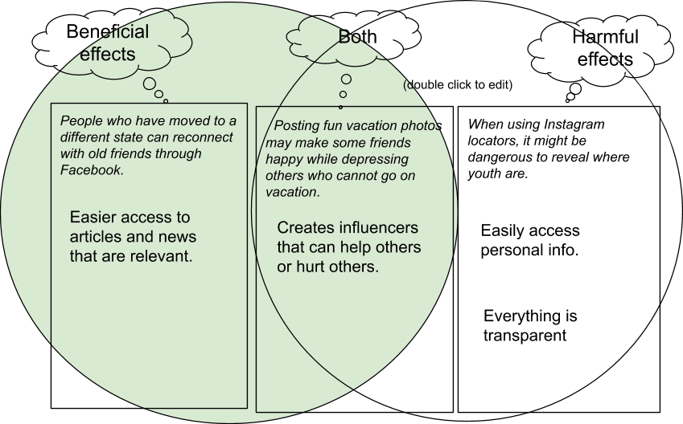

/cdn.vox-cdn.com/uploads/chorus_image/image/59263513/GettyImages_74280025.0.jpg)
1. In your own words, describe what event driven programming is. What event handler was used in the I Have a Dream app? How was it used?
Event driven programming is programming with specific steps that the computer understands, once something happens then the computer will respond by doing an action. An event handler that was used in the I Have A Dream App was the button, the button had an image of MLK when clicked it would play an audio of the MLK I Have A Dream Speech.
2. Is it possible to create an app without event driven programming? Explain.
I believe it is impossible to create an app without event driven programming because the event driven programming creates all of the funcuntionality and design aspect of the app. For example, without event driven programming for the PokemonApp me and my partner created most of the functionality like shaking for the theme song or clicking for their voices would not work and if these items did not work we would not have a functional app.
3. What elements and components make up the User Interface (UI) for the I Have A Dream app?
The elements and compents that made up the UI for the I Have A Drean app is the button, sound player and image. These items make up UI because these are the things you see when the app lauches that are usuable.
4. What are some of the elements that make up the UI for a car? A vending machine?
Some elements that make up the UI for a car is music, seat belt safety, driving modes, rear view camera, and etc. Some elements that make up a UI for a vending machine would be the buttons you click for the snack.
1. In your own words, give a sentence that would explain to a friend the difference between the WWW and the Internet.
The difference between the WWW (World Wide Web) and the Internet is that the Internet is a connection between different networks (different computers connected) hwile the WWW is a smaller application on the Internet, like the pages you search on Google.
2. List a beneficial effect and a harmful effect for a social media app that you discussed in your POGIL group. Are the effects on society, culture, or economics? Include a screenshot of the Venn diagram you made with your group.
3.If you were a developer of one of the social media apps that you discussed, how would you reduce the harmful effects?
For Instagram, we would disable likes or disable comments so it would reduce cyber bullying, hate, and other harmful effects it can have to others in the app. For Snapchat, identify inappropriate content so it would block the image or delete it to create a safer community.
1. What components make up the User Interface (UI) for this enhanced version of the I Have A Dream app?
Components that make uo the UI for the "enhanced" version of the I Have A Dream App was when you clicked on the MLK speech and also clicked on the Malcolm speech they would not overlap, instead the MLK speech would stop and the Malcolm speeh would play.
2. A computational artifact is something created by a human using a computer. We've just created a mobile app, which is certainly an example of such a artifact. Given examples from your own experience of computational artifacts that you've created -- images, videos, presentations, mash-ups -- and describe the software you used to create them.
A computational artifact that I have created is a presentation about Easter Island for my AME Class, the software I used to create this presentation was with Google Slides. Another computational artifact that i have created is videos, also for AME class, for these video I used Premiere Pro to edit and export it.